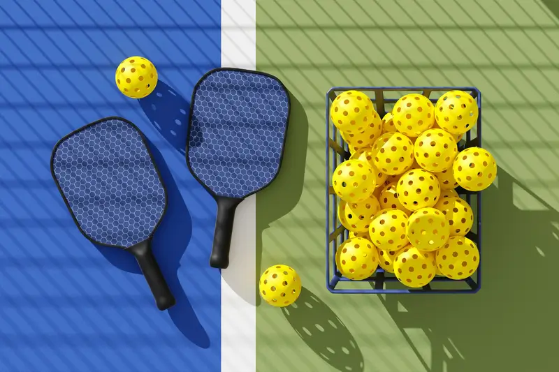
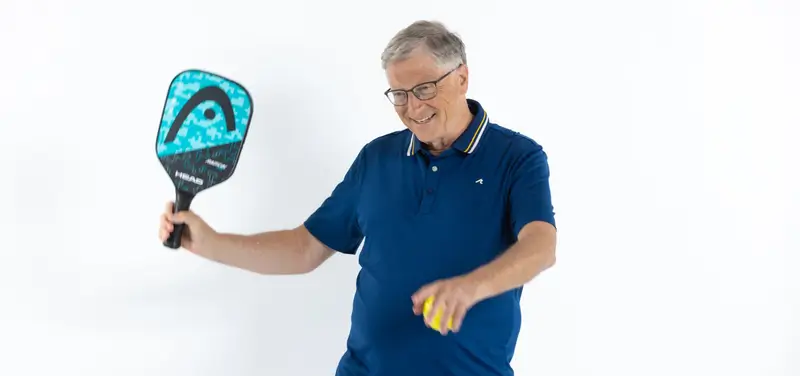
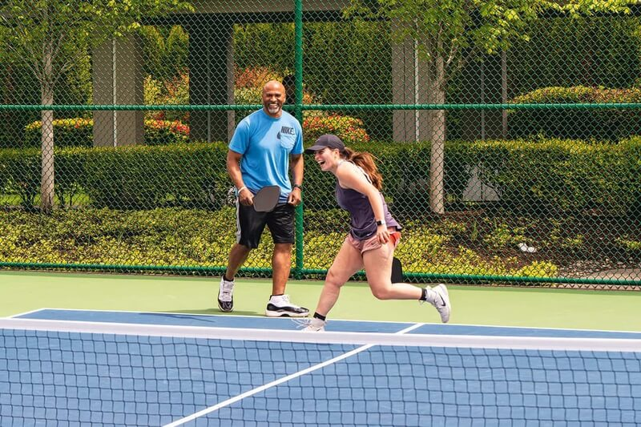
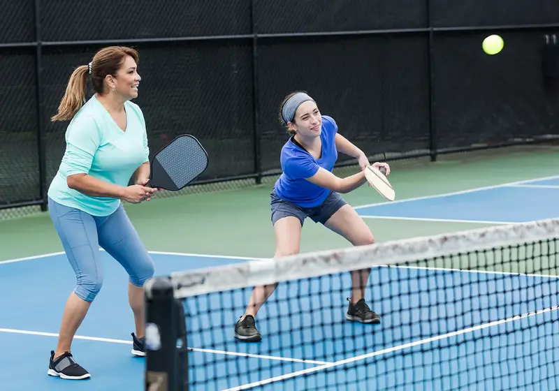

Pickleball là gì? Luật chơi và kỹ thuật cơ bản bạn cần nắm
Pickleball là gì khi thời gian gần đây bỗng trở thành một hiện tượng mới trong làng thể thao, có thể thấy pickleball xuất hiện khắp mọi nơi và độ hấp dẫn của bộ môn thể thao này đã thu hút rất nhiều người tham gia.
Bạn là người đam mê thể thao hay đang muốn lựa chọn một môn thể thao để rèn luyện sức khỏe mỗi ngày, bài viết dưới đây sẽ gợi ý đến bạn bộ môn đang thịnh hành và có tốc độ phát triển nhanh nhất xứ sở cờ hoa, với hơn 5 triệu người tham gia trên toàn quốc - pickleball. Nếu bạn vẫn chưa nghe hoặc chưa tìm hiểu về pickleball là gì, hãy đọc ngay bài viết sau đây nhé, chắc chắn sẽ khiến bạn bất ngờ về độ thú vị của nó.
Pickleball là gì?
Trước khi bắt đầu một môn thể thao mới, chúng ta cần tìm hiểu về pickleball là gì để hiểu chính xác cách và luật chơi. Cụ thể pickleball là môn thể thao kết hợp độc đáo giữa các môn bóng bàn, cầu lông và tennis nhưng kích thước vợt đánh và sân lại rất khác so với các môn thể thao đó, có thể chơi được trong nhà lẫn ngoài trời.
Tương tự với các môn kết hợp trên, pickleball cũng có 2 hình thức chơi, bao gồm: 2 người (đánh đơn) và 4 người (đánh đôi). Trong đó một người sẽ dùng vợt để giao và chuyền một quả bóng nhựa hình cung qua lưới cao 0,86 mét ở giữa sân, mục tiêu làm cho đối thủ bị phạm lỗi hoặc không đỡ được bóng.
Cách chơi cũng như luật chơi của pickleball rất đơn giản, cùng với vẻ ngoài giản dị nhưng đầy mê hoặc, môn thể thao này đã chinh phục nhiều tâm hồn yêu thích thử sức với sân chơi mới mẻ. Riêng đối với người chơi đã thành thục kỹ năng, trận đấu sẽ có nhịp độ nhanh và sôi động hơn.

Nguồn gốc ra đời của pickleball
Trước sự thịnh hành của pickleball, hẳn là mọi người sẽ đặt câu hỏi về nguồn gốc ra đời của môn thể thao hiện đại này.
Sự thật pickleball đã ra đời vào những năm 1965 tại Washington (Mỹ), sau đó nhờ hiệu ứng được mệnh danh là môn thể thao quen thuộc của vị tỷ phú Bill Gates và sự tham gia thi đấu của những cựu tay vợt hàng đầu thế giới nên trong 3 năm trở lại đây pickleball bỗng nổi lên như một hiện tượng mới trong làng thể thao, đạt mức tăng trưởng nhanh hàng đầu thế giới.
Ở thị trường Việt Nam, pickleball chỉ mới bắt đầu trong vài tháng trở lại đây, nhưng lại thu hút rất nhiều người chơi từ trẻ em, người trưởng thành, người mắc các bệnh về xương khớp, người cao tuổi, thậm chí ngay cả những người khuyết tật cũng có thể làm quen môn pickleball nhanh chóng. Không ai có thể lý giải được vì sao pickleball lại cuốn hút đến thế, mà chỉ khi trực tiếp tham gia với hiểu được.

Lợi ích đối với sức khỏe khi chơi pickleball
Không những là môn thể thao thịnh hành mà pickleball còn mang lại nhiều lợi ích cho sức khỏe, bao gồm:
Cải thiện sức khỏe tim mạch
Theo nguồn từ Cleveland Clinic, để tăng cường sức khỏe tim mạch, các hoạt động thể thao được khuyến nghị tập tối thiểu 150 phút với cường độ vừa phải, tương đương khoảng 50% công suất tối đa của cơ thể và pickleball có thể giúp bạn đạt được điều này.
Theo huấn luyện viên Josh York (đồng sáng lập Gymguyz) cho biết khi bạn chơi pickleball, nhịp tim của bạn sẽ tăng cao hơn bình thường giúp đốt cháy calo, cải thiện các bệnh tim mạch, phổi và duy trì cân nặng ổn định.
Cải thiện độ dẻo dai cho xương khớp
Lợi ích thứ hai của pickleball có thể giúp bạn cải thiện sức mạnh cơ bắp, ngăn ngừa loãng xương khi luyện tập đều đặn. Theo đó bộ môn này đòi hỏi bạn phải vận động toàn thân để làm tập luyện cơ bắp và xương khớp và khỏe khoắn hơn.
Giúp phối hợp tay, chân và mắt linh hoạt hơn
Giữ cân bằng tốt giúp cơ thể hạn chế tối đa việc bị té, đồng thời đây cũng là chỉ số quan trọng thể hiện sức khỏe thể chất của một người, đặc biệt là người lớn tuổi thường có khả năng cân bằng yếu.
Tăng cường sức khỏe não bộ
Việc luyện tập pickleball không chỉ tốt cho toàn bộ các cơ quan mà còn cải thiện sức khỏe não bộ, giúp cơ thể ngủ sâu và ngon hơn. Đồng thời tăng cường khả năng ghi nhớ, tập trung, giảm nguy cơ mắc bệnh trầm cảm để duy trì sức khỏe tinh thần tốt nhất.
Kéo dài tuổi thọ
Thói quen tập thể dục nói chung và rèn luyện các môn thể thao nói riêng theo nhiều nghiên cứu cho thấy đều mang lại tác dụng kéo dài tuổi thọ, bằng chứng là những người chơi quần vợt có tuổi thọ dài hơn gần 10 năm so với những người không chơi, vì lẽ đó mà môn pickleball cũng không ngoại lệ.
Luật chơi cơ bản của pickleball bạn cần nắm
Sau khi hiểu được khái niệm pickleball là gì và bắt đầu giai đoạn làm quen với cách chơi của pickleball, bạn cần nắm được các quy tắc và kỹ thuật dưới đây:
Luật giao bóng
- Sân chơi pickleball có kích thước 6m x 13,5m gần giống với sân đôi cầu lông.
- Vợt pickleball được làm từ các loại vật liệu tổng hợp và polymer.
- Lưới vợt không được cao hơn 80cm.
Luật giao bóng
- Vị trí giao bóng phải thực hiện dưới thắt lưng và từ đường cuối sân, dọc theo đường trung tâm chia sân thành 2.
- Bóng phải qua lưới và không được chạm lưới nếu đội bạn là bên giao bóng trước đó.
- Giao bóng theo hướng từ dưới lên trên.

Luật đánh và trả bóng
Lượt giao bóng được thực hiện luân phiên giữa hai đội và bóng phải vượt qua lưới.
Không được để bóng rơi bên ngoài đường biên phía sân đối phương.
Bóng không được chạm đất sau lần nảy đầu tiên và không được để bóng rơi xuống sân của bạn, nếu rơi sẽ tính là thua.
Khu vực cấm khi đang trong trận đấu
- Không được bước lên các ô vuông gần lưới, đó là khu vực cấm.
- Trong trường hợp đánh bóng nằm trong khu vực cấm, bạn không được đánh nó trực tiếp.
Nguyên tắc điểm số và xác định chiến thắng
- Người chơi hoặc cặp đôi phải giành được 2 - 3 set với mỗi set là 11 điểm theo nguyên tắc đấu tự do luyện tập hằng ngày.
- Người chơi hoặc cặp đôi phải đạt 15 hoặc 21 điểm để thắng một set trong các giải đấu chính thức.
- Khi người chơi hoặc đội nào vượt qua đối thủ ít nhất 2 điểm thì sẽ chiến thắng.

Các kỹ thuật chơi cụ thể
- Cú giao bóng: Giao bóng từ dưới lên, để bóng vượt qua lưới và vào phần sân của đối thủ.
- Dink: Thường được thực hiện gần lưới, nhẹ nhàng, để kiểm soát và gây ức chế cho đối thủ.
- Lob: Cú đánh bóng cao và xa, thường được sử dụng để tạo khoảng cách, kéo dài thời gian kịp quay về vị trí phòng ngự.
- Smash: Đánh mạnh để đưa bóng về phía đối thủ một cách nhanh chóng và khó phản hồi thành công.
Thông tin trong bài viết hy vọng đã giải đáp được cho bạn đọc về thắc mắc pickleball là gì, qua đó bạn có thể thấy pickleball vẫn còn là bộ môn mới tại Việt Nam, địa chỉ sân chơi và những người yêu thích cũng còn ít, đa số đều tập trung tại các thành phố lớn. Tuy nhiên việc đi đầu xu hướng cũng là một điều thú vị đúng không nào, mọi người cần lưu ý một vài chấn thương để hạn chế tối đa khả năng xảy ra khi tham gia bộ môn này nhé.
Bài viết liên quan